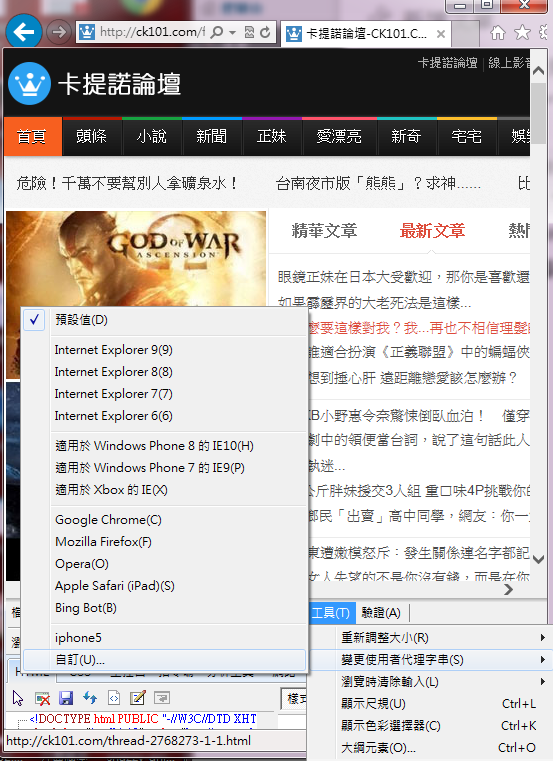
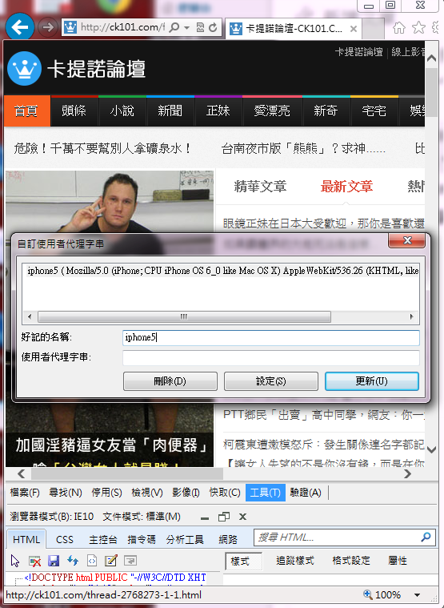
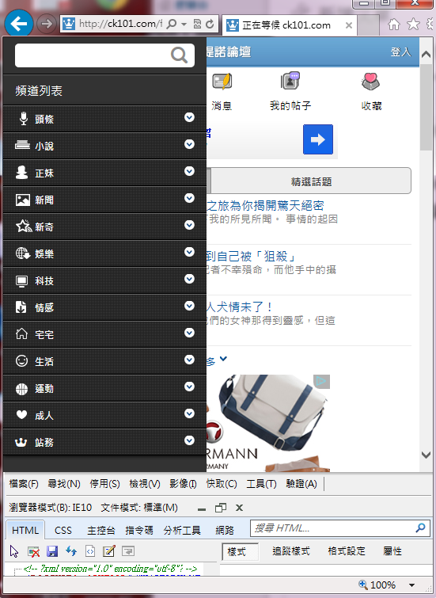
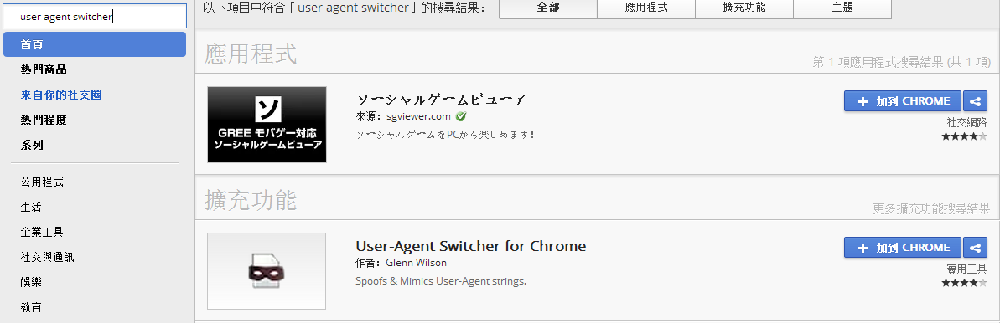
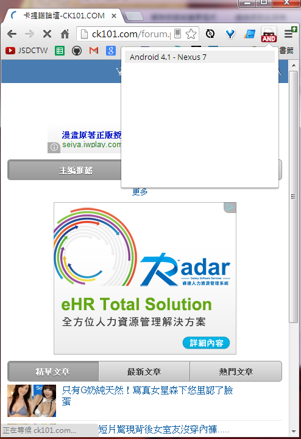

使用桌機關看手機板網頁，User Agent (使用者代理字串)
只要調整使用者代理字串，就能夠利用電腦版瀏覽器觀看手機板網頁。
首先開啟user agent list，查詢想要使用的瀏覽器or手機瀏覽器
開啟IE開發人員工具 > 變更使用者代理字串 > 輸入所查詢到的user agent
Mozilla/5.0 (iPhone; CPU iPhone OS 6_0 like Mac OS X) AppleWebKit/536.26 (KHTML, like Gecko) Mobile/10A403
切換後重新整理，就可以看到手機板的網頁
直接在google store 搜尋 「user agent swicher」，然後挑一個喜歡的下載
使用就是這麼簡單..，我下載的這個缺點是版本有點舊…
